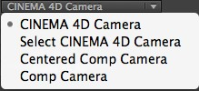

After Effects in CINEWARE
After Effects in CINEWAREで、CINEMA 4Dのシーンとアニメーションを直接読み込み、After EffectsのコンポジションとしてAfter Effects内で表示およびレンダリングが可能です。

最新バージョンのAdobe After Effectsでは、複雑の3Dエレメントやシーン、アニメーションをMAXON CINEMA 4DからAfter Effectsのコンポジションとして読み込むことができます。双方のアプリケーションによる特別な連携により、After Effectsユーザーはすばらしいモーショングラフィックスのコンポジションを今までにないスピードと簡単さで作成できます。
最高の使いやすさのために、MAXON CINEMA 4Dの強力なレンダリングエンジンであるCINERENDERがAdobe After Effectsに搭載。CINEMA 4Dのレイヤーをコンポジションとして読み込み簡単にレンダリングできます。これにより、プロダクションワークフローの状況によっては、3Dデータ部分をリクエストする必要がないので、双方のアプリケーション間を行ったり来たりすることを極力なくすことができます。
3Dの魅力的な世界をはじめるのはとても簡単です。もし、MAXON CINEMA 4Dの通常パッケージをお持ちでない場合でも、Adobe After Effectsに搭載されているMAXON CINEMA 4D Lite版からはじめることができます。
より汎用的でプロ向けの3Dの仕事をAdobe After Effectsで行う場合は、CINEMA 4D BroadcastもしくはCINEMA 4D Studioをオススメします。
すべての製品に関する情報は、www.maxon.netをご覧ください。
MAXON CINEMA 4Dファイルの読み込みと編集
既存のCINEMA 4Dファイル（.c4d）ファイルは、Adobe After Effectsのプロジェクトウィンドウにアセットして直接読み込むことができ、CINEMA 4Dレイヤーのコンポジションになります。CINEMA 4Dレイヤーのパラメータは,CINEWARE’エフェクトとして表示されエフェクトウインドウに表示されます。そして、他のレイヤーと同じようにエフェクトをCINEMA 4Dレイヤーに加えられます。それらはCINERENDERレンダリングエンジンよってレンダリングされたものに影響します。
もし、CINEMA 4Dファイルがない場合は、Adobe After Effectsの
もし、通常版のMAXON CINEMA 4Dがインストールされていない場合は、Adobe After Effectsに搭載されているCINEMA 4D Liteが開きます。新規シーンが作成された後、
Adobe After Effectsに読み込まれているCINEMA 4Dファイルを修正するには、アセットもしくはCINEMA 4Dレイヤーを選択して、
CINEMA 4Dで修正され保存されたプロジェクトは、Adobe After Effectsで自動的にに更新されます。
表示の設定 / レンダリング設定
CINEMA 4DのレンダリングエンジンであるCINERENDERの統合により、Adobe After Effects上でCINEMA 4Dレイヤーを直接レンダリングできます。つまり、After Effectsユーザーは、すべての3Dエレメントをコンポジションの中でコントロールして、最終レンダリングまで行えます。レンダリング設定はCINEWAREのエフェクト設定でコントロールします。
注意点として、CINEMA 4Dレイヤーは、基本的にそれぞれレンダリングと表示設定を独立して持っています。
CINEMA 4Dのレイヤは、基本的に独自のレンダリングと表示設定を持っています。コンポジションに読み込まれたすべてのCINEMA 4Dファイルのインスタンスは、コントロールパネルに一番上にあるSynchronize Layerがオフの場合を除き、レンダリングと表示設定は自動的に連動します。
各レンダリングされたフレームは、ワークフローのスピードアップのためにキャッシュされます。ビューの解像度がフル画質以外の場合、CINEMA 4Dのレンダリング結果も合わせて解像度が落とされます。
ワークフローを確実に早くするには、コンポジションでの作業中はRender SettingsをSoftwareにします。テクスチャは低解像度で表示され、シェーダーの計算も簡略化されます。
テクスチャとシェーダをオフにするオプション（Softwareでは、テクスチャとシェーダがオフになり、Standard (Draft)ではテクスチャのみオフになります。）やダイナミクスやパーティクルシミュレーションの前計算を防ぐオプションも用意されています。ただし、これらのオプションは、最終レンダリング時にオフにしておくか、CINEMA 4Dシーン内で、シミュレーションをキャッシュ（固定）しておく必要があります。ダイナミクスキャッシュ と パーティクルを固定もご覧ください。
Keep Textures in RAMオプションを使ってテクスチャのキャッシュさせることで、レンダリングを大幅にスピードアップさせます。
カメラとCINEMA 4Dシーンのエレメントの働き
Adobe After Effectsと同じように、設定の異なる複数のカメラを設定でき、個別にアニメーションも設定して、CINEMA 4Dファイルに追加できます。両方のアプリケーション間で正確に統合するには、カメラの動きが一致している必要があります。これは、CINEWAREのProject Settingsメニューで行います。
ここで、既存のCINEMA 4DカメラかAdobe After Effectsのカメラを使うかを指定します。
４つのオプションがあります:

CINEMA 4D Cameraオプションは、アクティブなCINEMA 4Dシーンのカメラを使います。Select CINEMA 4D Cameraオプションは、CINEMA 4Dのカメラから選択します。ただし、カメラはCINEMA 4Dのシーンに存在している必要があります。次の２つのオプションは、Adobe After Effects内でカメラを作る方法です。それぞれのオプションの違いは、座標システムです。座標システムの原点は、CINEMA 4Dのシーンの中心点になり、軸は3D空間でプラスとマイナスの向きが反対向きになります。After Effects内では、コンポジションの左上位置がヌルポイントの座標になります。
これが、CINEWAREの設定がAdobe After Effects上でカメラを作業を行うのに、2つ方式を提供している理由です。もし、Comp Cameraオプションが選択されている場合、Adobe After Effects と MAXON CINEMA 4Dの座標は同じになります。ただ、長年After Effectsのユーザーだった方は、若干混乱するかもしれません。Centered Comp Cameraオプションは、座標システムを整理するのに使えます。
Extract機能を使い、CINEMA 4DのカメラをAdobe After Effectsに展開する場合、Comp Cameraオプションを使うことをオススメします。というのも、座標システムのずれにビューがオフセットされてしまうからです。
レイヤー
CINEMA 4Dは、汎用的なレイヤーシステムによって複雑3Dシーンを管理することができます。このレイヤーシステムは、Adobe After Effectsの階層レイヤーとしてデザインされたものではなく、シーンのエレメントをグループ化をより簡単に効率的に行なえます。シーンの個々のパーツの表示と非表示を切り替えられます。CINEMA 4Dレイヤー個別に独立して、Adobe After Effectsでオンオフできます。有効なCINEMA 4Dのレイヤだけが、CINEMA 4Dレイヤーのコンポジションでレンダリングされます。これにより、一つのCINEMA 4Dファイルをコンポジションで複数組み合わせて、シーンの特定のエレメントのみを表示して、同じCINEMA 4Dレイヤー同士で合成することもできます。
たとえば、3Dの背景と前景エレメントを分離して、After Effectsのコンポジションで重ねたり、After Effectsでフッテージと統合することができます。
マルチパス
3D向けのマルチパスは、すべてのエレメントを1つのまとめてひとつの画像としてレンダリングする代わりに、1枚の画像をレンダリングして各画像の要素を分割する工程のことです。
それらのエレメントは、一緒に合成しますが、分割した画像エレメントは個別に編集や調整、修正や色補正が行えます。マルチパスレンダリングの一般的な例としては、サーフェイスの鏡面反射（拡散、スペキュラ、影など）を分けて書き出し、After Effects上でそれぞれを最適な合成モードで合成します。
CINEWAREの Add Image Layerオプションを使えば、コンポジションを簡単に構築できます。これをクリックすれば、レンダーエレメント毎に個別に有効にした複数のCINEMA 4Dレイヤーが作成されます。Set Multi-Passオプションを使えば、指定したCINEMA 4Dレイヤーで、どのパスを表示するかを指定できます。
レンダーエレメントごとに追加のレイヤーを作成するには、レイヤーを複製して前述のオプションを使って希望のエレメントを追加します。
マルチパスでは、Adobe After Effectsで個別のエレメントをルミナンスキーマットを使って、分離することでオブジェクトパスを書き出すことができます。個別のパスを出すには、Standard Draft以上のrender modeが有効になっている必要があります。なお、追加のパスを出力するには、コンポジットタグを指定する必要があります。
オブジェクトパスを作成するには、該当するオブジェクトをCINEMA 4D内でコンポジットタグを適用して、グループIDを指定してください。また、CINEMA 4Dのレンダリング設定でマルチパスのオプションを有効にする必要があります。パスの名前をAfater Effectsで表示させるようにするには、CINEMA 4Dでそれぞれのパスに名前をつけておくことをオススメします。
ただし、CINEMA 4Dの特殊効果とライトごとに分ける（ライトのマルチパス）は現在の統合ではまだサポートされていませんので注意してください。
マルチパスで最適な結果を得るには、可能ならAdobe AfterEffectのプロジェクト設定で作業用スペースをリニア化（リニアワークフロー）にチェックを入れ、色深度を32 bit/チャンネル（浮動小数点）にします。そうしないとアーティファクトが発生することがあります。
シーン情報の連携
CINEMA 4DとAfter Effectsのコンポジションのカメラアニメーションとシーンライトを合わせるために、CINEMA 4Dにあるカメラとライト（アニメーションを含む）をいつでもAfter Effectsに転送できます。すべての共通のカメラとライトのプロパティは一致します。CINEWAREのCommandメニューにあるExtractボタンをクリックすると、該当するエレメントがAfter Effectsのコンポジションに作成されます。
なお、転送出来るライトは、CINEMA 4Dのライトの一般タブにあるAEにエクスポートオプションが有効になっているものだけです。このオプションは、デフォルトで有効になっているので、CINEMA 4Dにあるすべてのライトオブジェクトとカメラオブジェクトが対象となるので注意してください。
逆に、アニメーション付きのAfter EffectsのカメラもCINEMA 4Dのシーンに転送できます。これは、CommandsにあるMergeオプションを使います。
データの参照方法
Adobe After Effects内でのCINEMA 4Dレイヤーは2Dレイヤーです。After Effectsから3Dレイヤーをコンポジションに効果的に配置するために、CINEMA 4Dのオブジェクトの位置情報を3D平面としてカラーも含めて作成できます。これを行うには、CINEMA 4Dシーンにあるポリゴンオブジェクトもしくはヌルに外部コンポジットタグが適用されている必要があります。3D平面オプションを有効にすると、Adobe After Effects での3D平面のサイズとカラーを指定できます。
CINEWAREの Extract機能を使うと、これらのデータをインポートできます。
CINEMA 4DシーンをAfter Effectsにインポート時に問題がでないようにするには、CINEMA 4Dの
個々のパラメータの概要
以下に、CINEWAREの設定に関する説明をしています。実際のアプリケーションの機能の使い方については、前述をご覧ください。
Options
もし、提供されているCINERENDERとは別のレンダラーたとえば新しいバージョンや異なるバージョンのCINEMA 4Dを使いたい場合、使用したいCINEMA 4Dの実行ファイルを（*.exeもしくは*.app）このパスに指定してください。注意として、他のCINEMA 4Dバージョンをレンダラーとして使う場合は、CINEMA 4Dのライセンスが必要です。
このパスは、CINEMA 4Dファイルの編集するCINEMA 4Dのバージョンを指定する場合に使います。たとえば、新しいバージョンのCINEMA 4Dがインストールされており、それをファイル編集で使いたい場合、使用したいCINEMA 4Dの実行ファイルを（*.exeもしくは*.app）このパスに指定してください。
ここでは、CINEWAREと搭載されているCINEMA 4Dレンダラー(CINERENDER)のコミュニケーションポートを指定します。もし何かの理由で設定を変更した場合は、After Effectsを再起動する必要があります。
コンポジションにあるC4Dファイルのすべてのレイヤのレンダリングとプロジェクト設定をレイヤが連動するかを指定します。このレイヤー設定を他のレイヤーと同じにするかどうかを決めます。ただし、このパラメータは、コンポジションにインスタンスのC4Dが一つ以上ある場合のみ表示されます。
レンダリング設定
複雑なシーンでは、レンダリング時間が劇的に伸びてしまうので、CINEWAREでは3つレンダリングモードを提供しています:
多くの場合で使えるこのモードは、CINEMA 4Dのビューポートを反映しており、シーンのプレビュに役立ちます。シェーダやマルチパスは表示されません。
アンチエイリアス無しで表示され、最終レンダリングの前段階として使えます。
CINEMA 4Dのシーンで指定されているレンダリング設定を使ってレンダリングします。

表示のタイプを指定します。元のCINEMA 4Dのビューポート設定が使うか、作業を軽くするためWireframe もしくは Boxに変更もできます。
表示を軽くするために、テクスチャ表示をオフにします。
表示スピードに時間のかかるダイナミクス、クロス、パーティクルシミュレーション、MoGraphのシミュレーションの計算をオフにできます。そのため、オフにするとその表示結果は不正確になります。このオプションは、最終レンダリング時には、基本的にオフにしてください。もしくは、CINEMA 4Dファイルでシミュレーションのキャッシュを予め作成してください。
このオプションは、最終レンダリングはオフにすべきです。というのも、パーティクルや多くのMoGraph機能、ダイナミクス、クロスを正確に表示やレンダリングができなくなるからです。
レンダリングスピードをアップするために、テクスチャをキャッシュし、最レンダリングの必要がなくなります。 (欠点: 修正されたテクスチャは表示されません)
Purge Memory
長期間レンダーサーバーを使うと、処理されたシーンを保持するため遅くなることがあります。レンダリングが遅くなったり、レスポンスが悪くなったりした場合、レンダーサーバーンのメモリをリフレッシュできます。（このオプションは、CINEMA 4D R15以前のバージョンをレンダラーに使うと表示されません）
Project Settings
CINEMA 4Dレイヤーの表示に使うカメラを指定します。
これはデフォルトで、CINEMA 4Dのシーンでアクティブなカメラを使います。
CINEMA 4Dのシーンから任意のカメラを選択して使います。
このカメラはAfter Effectsの座標システムを使います。
After EffectsとCINEMA 4Dが同じ座標を使って表示します。CINEMA 4Dの座標は、Adobe After Effectsの座標と異なる座標を使っており、After Effectsユーザは、その考え方を切り替える必要があります。CINEMA 4Dのカメラを展開した場合は、After Effectsの表示をCINEMA 4Dのシーンに切り替えるためにこのオプションを使わなければなりません。
Set Camera
もし、CINEMA 4Dのシーンがデフォルトのカメラの他に複数のカメラを持っている場合、Set Cameraボタンを使ってカメラを選択できます。
CINEMA 4Dのシーンにレイヤがある場合、それを選択できます。CINEMA 4Dのシーンで、CINEMA 4Dのレイヤが適用されているエレメントのみが使用できるようになります。これにより、独立したオブジェクトグループのみをAdobe After EffectsのCINEMA 4Dレイヤーで表示できます。
Set Layers
CINEMA 4Dシーンのどのレイヤを使うかを選択します。
Multi-Pass (Linear Workflow)
CINEMA 4D Multi-Passオプションを有効にすると、CINEMA 4Dシーンの個別のパスを指定できます。もしマルチパスのオプションがCINEMA 4Dのシーンで有効になっていない場合でも、予め定義されています。
オブジェクトバッファのような特別なパスについては、CINEMA 4Dシーンのレンダリング設定のマルチパスメニューで予め指定しておく必要があります。
Set Multi-Pass ...
タイムラインで使う、パスをここで指定します。注意として、特殊効果（HairやSketch and Toonなど）は、サポートされていません。
CINEWAREのDefine Multi-Passesオプションが有効にして、Add Image Layersをクリックすると、CINEMA 4D内で指定されているマルチパスがタイムラインに展開されます。
つまり、CINEMA 4Dのレンダリング設定で指定されているマルチパスだけが展開されるということです。
Add Image Layers
Define Multi-Passesをチェックせずに、Add Image Layersボタンをクリックすると、デフォルトで設定されたすべてのマルチパスがタイムラインに展開されます。
マルチパスでは、特殊効果とマルチパスのライトごとに分けるはサポートされていません。
Commands
After Effectsでアクティブなコンポジションカメラを、CINEMA 4Dシーンに追加します。アニメーションの付いたカメラを対応しています。
Extract
CINEMA 4Dシーンにあるすべてのカメラとライトのアニメーションと設定を、タイムラインにAdobe After Effectsコンポジションのレイヤーとして変換します。
外部コンポジットタグが適用されたポリゴンオブジェクトも、位置を参照するためにヌルレイヤーもしくはカラー指定された3D平面として、コンポジションに追加されます。